Opus 5.5는 어떤 모델인가요
영상은 Opus 5.5에 Mobbin을 붙여 메신저 앱 화면, 그 앱의 랜딩 페이지, 그리고 Mobbin의 플로우 기능까지 차례로 다뤄요. 본론에 앞서 왜 이 모델을 골랐는지부터 짚어요.
Claude Opus 5.5는 Anthropic이 새로 낸 모델이에요. 발표 글 첫 문단에는 두 가지 주장이 있어요. 대부분의 일에서 Claude Fable 5.1 수준을 낸다는 것, 그리고 Opus 5보다 40% 싸게 돌아간다는 것이에요. 아래 화면에서 분홍색으로 칠한 부분이 그 40%예요.
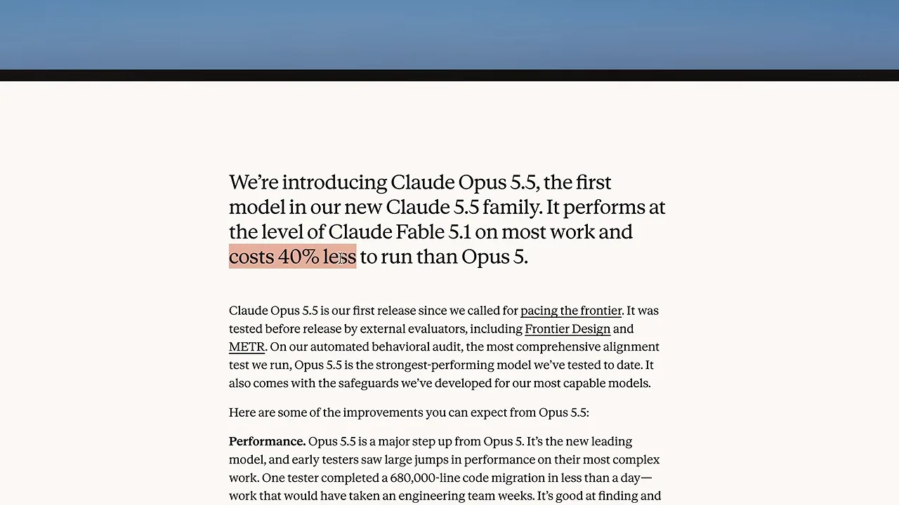
발표자는 이 모델이 나온 뒤로 Fable 5.1을 거의 쓰지 않았다고 해요. 근거로 Terminal-Bench 4.0 그래프를 보여 줘요. 가로축은 시도 한 번당 비용(로그 눈금), 세로축은 점수예요. 주황색 선이 Opus 5.5, 초록색 선이 Fable 5.1이고, 점마다 low부터 max까지 노력 수준이 적혀 있어요.
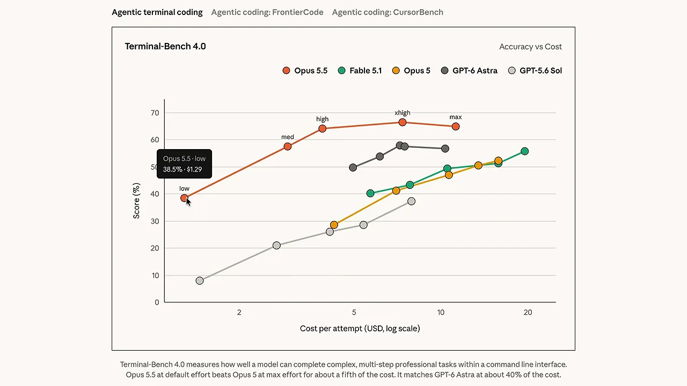
다만 발표자는 모델 성능만으로는 디자인이 좋아지지 않는다고 말해요. 그 이야기가 다음 섹션이에요.
Mobbin을 MCP로 연결해요
발표자가 영상 전체에서 가장 힘주어 말하는 문장은 이거예요.
There's not a single model out there that truly understands what good design looks, feels, and functions like.
좋은 디자인이 어떻게 보이고, 느껴지고, 동작하는지 제대로 아는 모델은 하나도 없어요.
— 영상 01:38
그래서 작업 전에 좋은 예시를 먼저 가르쳐야 해요. 발표자가 쓰는 방법은 Mobbin이에요. Mobbin 소개 화면에는 1,428개 앱, 621,500장이 넘는 화면, 323,900개 플로우라는 숫자가 크게 떠 있어요. 주변 아이콘은 Airbnb, Dropbox, Twitch처럼 라이브러리에 든 앱들이에요.
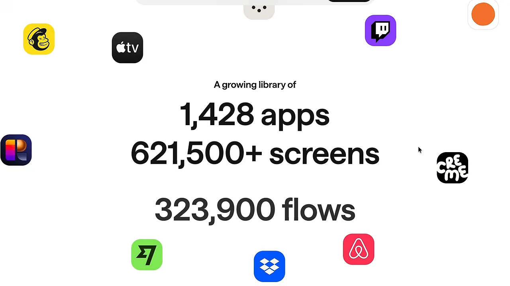
Mobbin은 MCP 서버도 제공해요. 연결해 두면 에이전트가 지금 만드는 앱이나 웹사이트와 가장 비슷한 레퍼런스를 스스로 찾아와요. 좋은 유저 플로우나 좋은 히어로 섹션이 어떻게 생겼는지 그렇게 배워요. 아래 그림은 영상에 나온 Mobbin 라이브러리의 세 갈래와, 커넥터 화면에 보이는 도구 세 개를 짝지어 본 거예요.
Claude Code에 연결하기
설정은 간단해요. 발표자는 Claude Code 데스크톱 앱을 써요. 사이드바에서 Customize로 들어가면 Skills, Connectors, Plugins 탭이 있고, Connectors 탭 오른쪽 위에 검색창이 있어요.
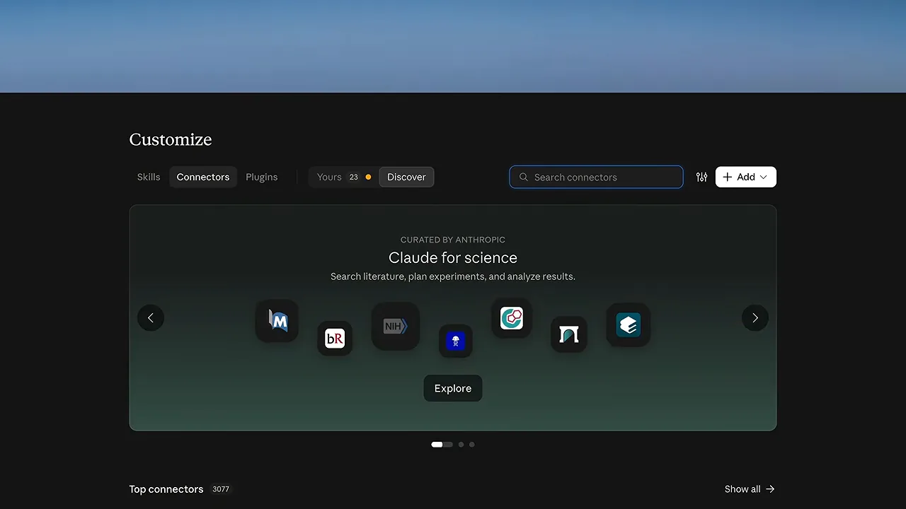
- 사이드바에서 Customize를 열어요 — MCP 서버나 커넥터를 관리하는 곳이에요.
- Connectors 탭에서 Mobbin을 검색하고 Connect를 눌러요
- Mobbin 계정을 인증해요 Mobbin 항목에 'Connected'가 표시돼요
연결된 Mobbin 커넥터 화면을 보면 쓸 수 있는 도구가 search_flows, search_screens, search_sections 세 개로 나와 있어요. 오른쪽 아래에는 커넥터 주소 https://api.mobbin.com/mcp가 보여요.
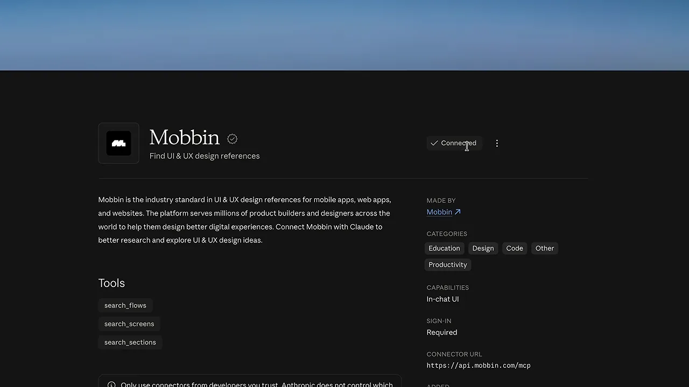
새 세션을 열고 모델 선택에서 Opus 5.5를 골라요. 목록에는 Fable 5.1, Sonnet 5, Haiku 4.5도 있어요. 발표자는 Sonnet 5나 Fable 5.1로도 Mobbin MCP와 함께 좋은 결과를 낼 수 있다고 해요.
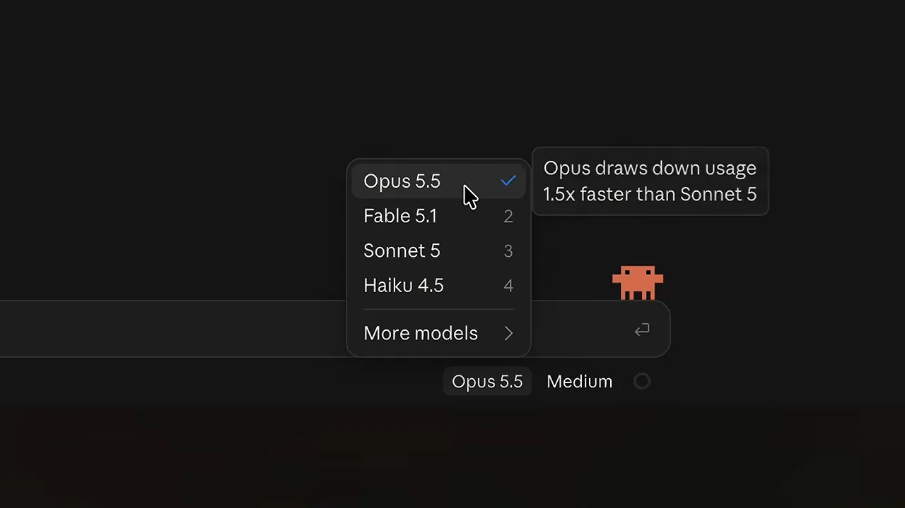
레퍼런스 없이 만든 첫 버전
첫 데모는 일부러 Mobbin 없이 시작해요. 먼저 레퍼런스 없이 한 번 만들고, 그다음 Mobbin으로 조사해 다시 만드는 흐름이에요. 영상 전체가 아래 순서로 흘러가요.
flowchart LR A["1. 레퍼런스 없이
첫 버전 생성"] --> B["2. Mobbin MCP로 조사
HTML 리포트"] B --> C["3. 리포트대로
리디자인 + 자체 점검"] C --> D["4. 같은 세션에서
랜딩 페이지"] D --> E["5. Mobbin 플로우로
인터랙션 참고"]
프롬프트는 메신저 앱 하나를 통째로 디자인해 달라는 내용이에요. 입력창을 보면 요구한 화면이 하나씩 나열돼 있어요. 고정·안 읽은 대화가 있는 받은편지함, 반응·답장·음성 메모·사진을 주고받는 1:1 채팅, 멤버 정보가 있는 그룹 채팅, 새 메시지 흐름, 설정이에요.
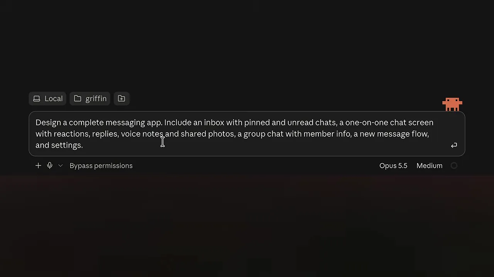
Opus 5.5는 Claude Code 안에 아티팩트 캔버스를 만들고 화면들을 가로로 나란히 늘어놨어요. 앱 이름은 Parley로 지었어요. 맨 위 제목 아래로 Inbox, New message, Chat with Maya, Message actions, Group chat, Group info 순서로 화면이 이어져요. 크림색 바탕에 초록색 강조색을 썼어요.
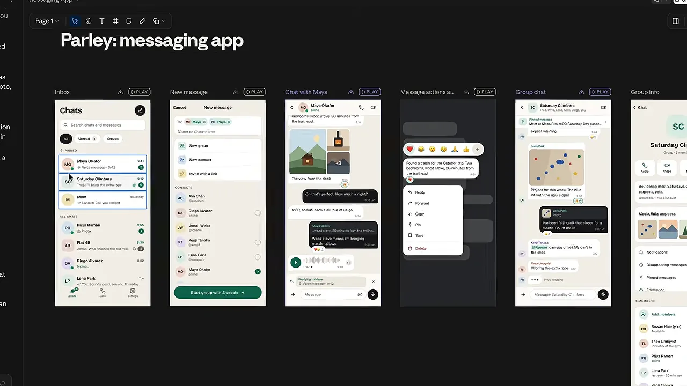
첫인상은 나쁘지 않지만 발표자는 아쉬운 점을 여럿 짚어요. 여백과 정렬이 군데군데 어긋나요. 전체는 라이트 모드인데 Chat with Maya 화면에서 내가 보낸 말풍선만 검은색이라 어색해요. 화면 사이 위계도 약하고, 설정 화면 카드 아래쪽 여백이 특히 이상하다고 해요.
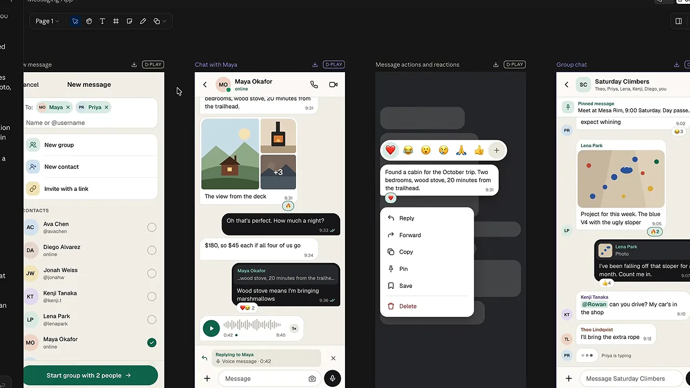
발표자의 평가는 이래요. 원하는 기능을 다 넣고, 그럭저럭 괜찮은 시각 방향을 잡고, 기술적으로는 쓸 수 있는 결과까지 첫 시도에 80%쯤 와요. 다만 예쁜 초안에서는 잘 보이지 않는 함정과 사용자가 걸릴 지점이 남아 있고, 그걸 찾아내는 게 Mobbin MCP의 몫이에요.
바로 고치지 말고 리포트부터
Mobbin 커넥터가 켜져 있는지 확인한 뒤 다음 프롬프트를 보내요. 여기서 발표자는 리디자인을 바로 시키지 않아요. 대신 이렇게 요청해요.
- Mobbin MCP로 가장 관련 있는 소셜 메신저 앱들을 찾아요.
- 그 앱들이 디자인 패턴과 시각 방향에서 무엇을 잘하는지 HTML 리포트로 정리해요.
- 조사 결과를 바탕으로 전체 리디자인 계획을 세워요.
이유는 단순해요. 발표자는 모델이 계획과 목표를 제대로 세우지 않은 채 리디자인부터 진행해 버리는 걸 싫어해요. 리포트를 받아 두면 모델도 계획이 생기고, 사람도 그 계획을 먼저 읽어 볼 수 있어요.
왼쪽 대화 창에서 Claude Code가 MCP로 Mobbin을 검색하는 모습이 보여요. 아래 화면은 search_screens 도구의 결과예요. 검색어는 "chat inbox list with pinned conversations and unread badges"이고, 10장이 나왔어요. 왼쪽이 X, 오른쪽이 'LINE'의 대화 목록이에요. 오른쪽 캔버스에는 비교 대상인 Parley 받은편지함이 있어요.
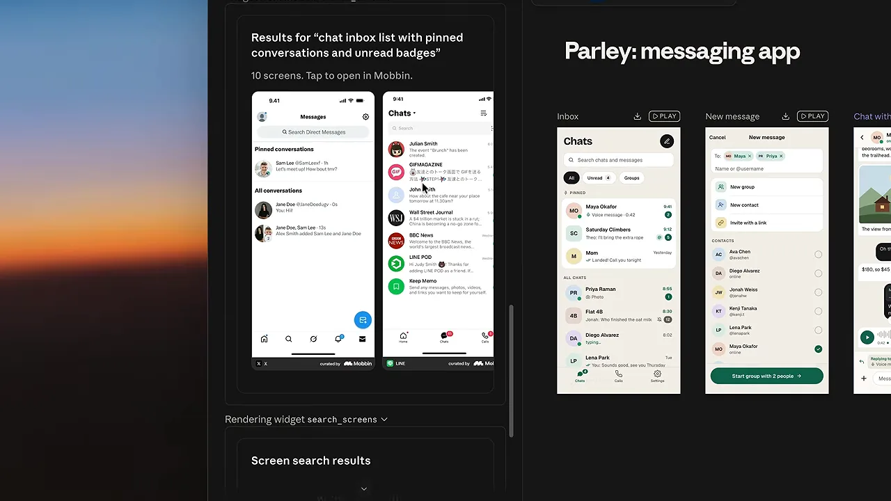
리포트 첫 장: 기능은 맞고 모양이 틀렸어요
돌아온 리포트는 꽤 길어요. 요약, 조사한 앱, 새 시각 방향 등이 탭으로 나뉘어 있어요. 요약 칸의 제목은 "Parley has the right features and the wrong look"이에요. 패턴은 대부분 맞고, 시각 층은 통째로 다시 해야 한다는 진단이에요. 그 아래 카드 네 장이 할 일이에요. 크림색 바탕과 테두리 빼기, 다크 모드를 정식 테마로, 버튼과 입력창을 떠 있는 형태로, 기능과 인터랙션 모델은 유지하기예요.
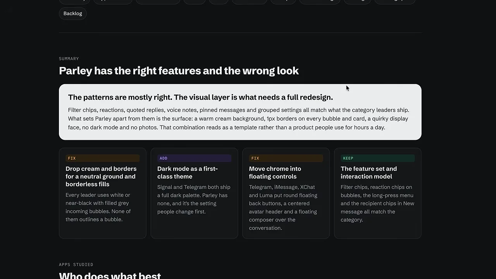
앱마다 잘하는 것 하나씩
다음 칸은 "Who does what best"예요. 앱마다 가장 잘하는 것과 Parley가 가져갈 것을 짝지은 표예요. 리포트는 각 앱이 한두 가지에서 가장 강하니, 한 앱을 베끼지 말고 각자의 장점을 골라 오자고 정리해요.
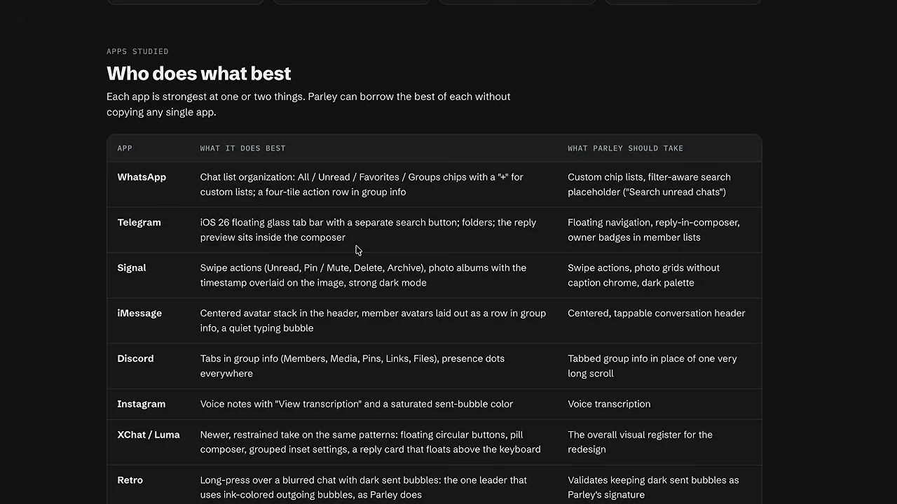
표의 내용을 우리말로 옮기면 이래요.
| 앱 | 가장 잘하는 것 | Parley가 가져갈 것 |
|---|---|---|
| 전체·안 읽음·즐겨찾기·그룹 칩과 '+' 칩으로 대화 목록 정리 | 직접 만드는 칩 목록, 필터에 맞춰 바뀌는 검색 안내 문구 | |
| Telegram | 검색 버튼이 따로 있는 떠 있는 유리 탭 바, 입력창 안의 답장 미리보기 | 떠 있는 내비게이션, 입력창 안 답장 |
| Signal | 스와이프 동작(안 읽음, 고정, 음소거, 삭제, 보관), 강한 다크 모드 | 스와이프 동작, 다크 팔레트 |
| iMessage | 헤더 가운데 아바타, 조용한 입력 중 표시 | 가운데 정렬된, 눌러서 여는 대화 헤더 |
| Discord | 그룹 정보 탭(멤버, 미디어, 고정, 링크, 파일) | 아주 긴 스크롤 대신 탭으로 나눈 그룹 정보 |
| 음성 메모의 'View transcription', 진한 보낸 말풍선 색 | 음성 메모 텍스트 보기 | |
| XChat / Luma | 같은 패턴을 더 절제해서 쓴 최근 디자인 | 리디자인 전체의 시각적 톤 |
| Retro | 어두운 보낸 말풍선을 쓰는 유일한 앱 | Parley의 어두운 말풍선을 시그니처로 유지 |
재미있는 건 마지막 줄이에요. 첫 버전에서 발표자가 어색하다고 한 검은 말풍선을 리포트는 오히려 남기자고 해요. Retro라는 근거를 찾았기 때문이에요.
새 색 토큰과 미리보기
리포트는 업계 앱들의 공통점과 Parley의 현재 상태도 나란히 비교해요. 왼쪽 'What the leaders share'에는 중립적인 흰색·연회색 바탕, 내 메시지에만 쓰는 진한 색 하나, 시스템 글꼴의 큰 제목, 떠 있는 둥근 버튼이 적혀 있어요. 오른쪽 'Where Parley stands today'는 크림색 바탕과 1px 테두리를 고치고('FIX'), 어두운 말풍선은 유지하고('KEEP'), WhatsApp과 너무 비슷한 초록색 강조색은 코발트로 바꾸자고 해요. 아래 'Proposed tokens'에 새 디자인 토큰 여섯 개가 색 견본으로 나와요.
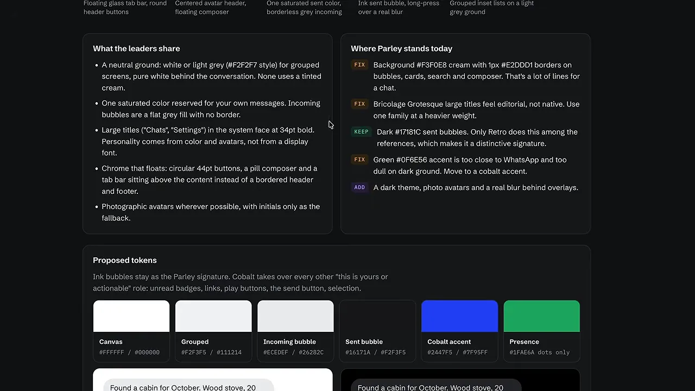
화면마다 같은 형식의 분석
그다음부터는 화면 하나씩 같은 형식으로 분석해요. 아래는 메인 화면인 대화 목록이에요. 위에는 Mobbin에서 가져온 WhatsApp, Signal, Discord 화면과 각각의 요점이 있어요. 아래 왼쪽 'What they do well'은 업계 앱들이 잘하는 점, 오른쪽 'Parley moves'는 Parley가 할 일이에요.
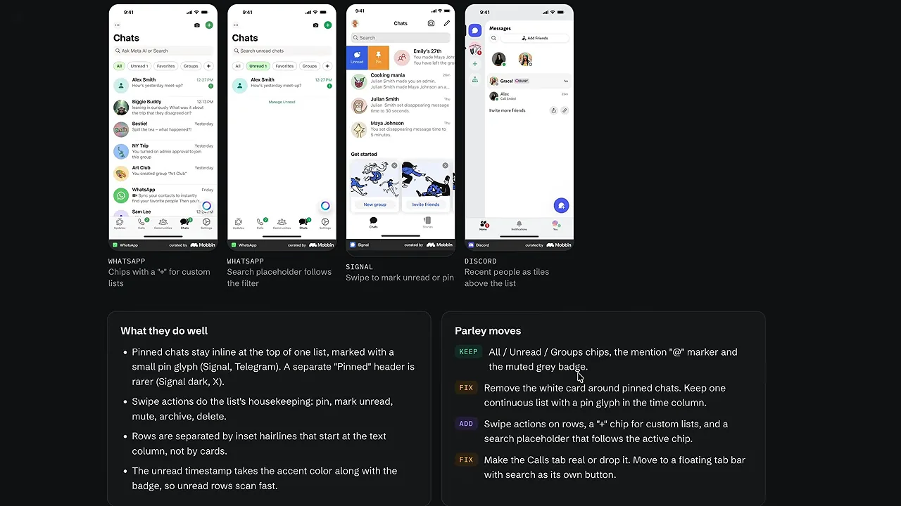
발표자가 꼽는 가장 큰 장점은 이 과정이 자동이라는 점이에요. 업계 앱의 스크린샷을 직접 모으지 않아도 Mobbin 라이브러리에서 모델이 알아서 꺼내 와요.
리포트대로 다시 디자인한 결과
계획이 섰으니 실행해요. 프롬프트는 짧아요. 조사 결과대로 리디자인하고, 끝난 뒤 리포트에 적힌 패턴과 좋은 시각 방향에 실제로 도달했는지 스스로 확인하라는 내용이에요. 마지막 확인 지시가 들어간 게 포인트예요.
결과 캔버스는 세 줄로 정리돼 있어요. 첫 줄은 'Parley, light', 둘째 줄은 'Parley, dark', 맨 아래 줄은 상태 화면과 컴포넌트예요. 첫 버전에는 없던 다크 모드 한 벌이 통째로 생겼어요.
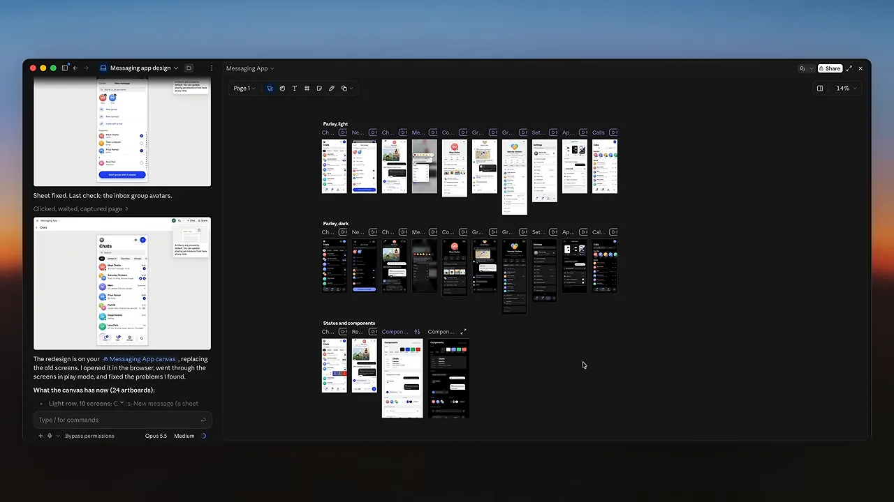
맨 아래 줄을 확대하면 'States and components'라는 제목 아래 대화 줄을 옆으로 민 상태, 음성 녹음 중인 상태, 버튼과 말풍선 같은 컴포넌트가 라이트와 다크로 따로 그려져 있어요.
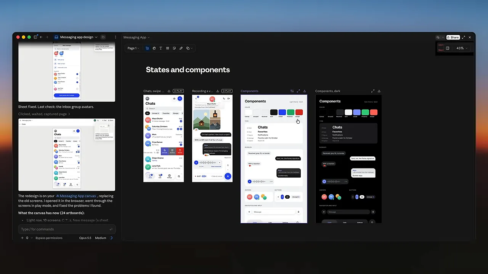
라이트 모드 화면을 가까이 보면 그룹 정보, 설정, Appearance 화면이 이어져요. 하단 탭 바는 둥글게 떠 있고 검색 버튼이 따로 있어요. 발표자는 최신 iOS 가이드라인에 훨씬 가까워졌다고 보고, 전체 인상을 Telegram, Instagram DM(Direct Message), Meta AI, WhatsApp을 섞은 느낌이라고 해요. Mobbin에서 모은 레퍼런스가 그대로 방향을 잡은 거예요.
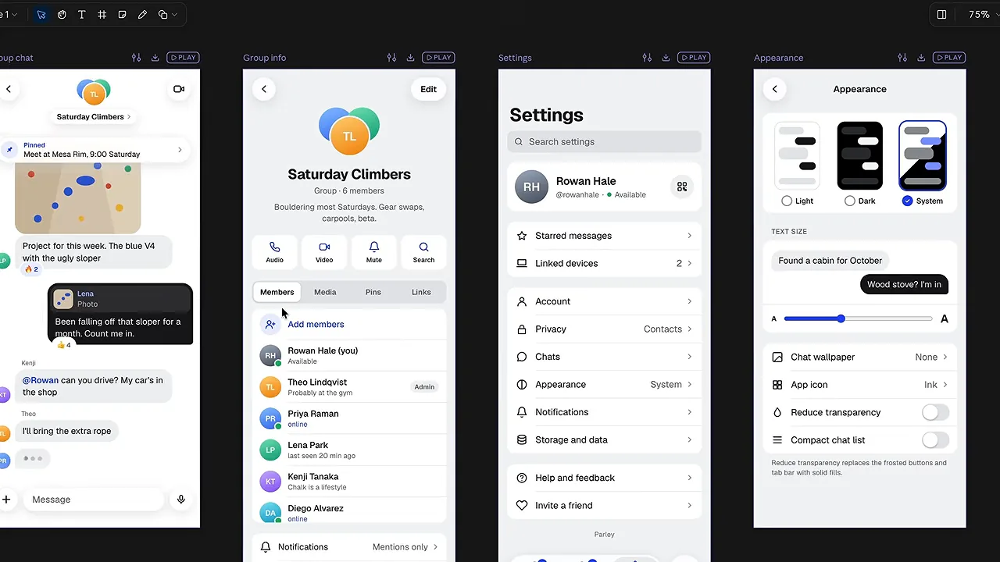
눌러 볼 수 있는 프로토타입
캔버스의 재생 버튼을 누르면 화면 모음이 아니라 실제로 동작하는 프로토타입이 전체 화면으로 열려요. 발표자는 대화 목록 필터를 눌러 보고, 설정에서 Appearance로 들어가 다크 모드로 바꿔요. 아래 화면에서 테마 미리보기 중 가운데 Dark에 선택 표시가 들어가 있어요.
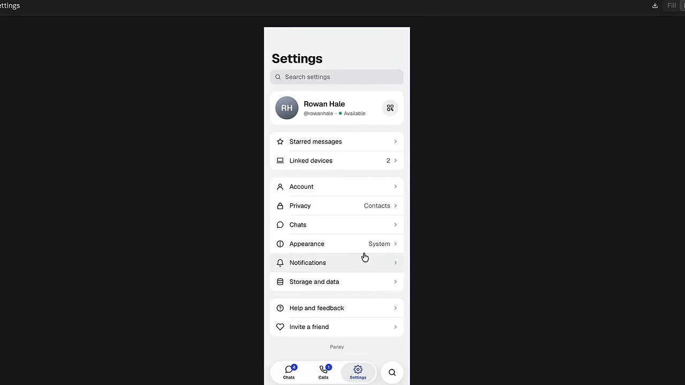
무엇이 바뀌었나요
왼쪽 대화 창에는 Claude Code가 남긴 변경 요약이 있어요. 'Patterns from the report now in place' 아래에 화면별로 리포트의 어떤 패턴을 넣었는지 적혀 있어요. 그 아래 'Working in play mode'에는 재생 모드에서 직접 눌러 확인한 항목이, 'Fixed after checking'에는 확인하다 고친 항목이 이어져요.
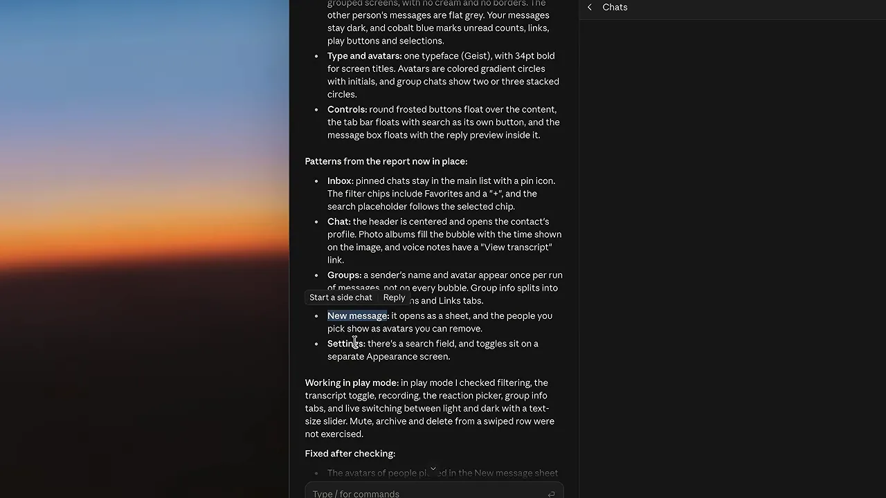
그중 발표자가 짚은 변화를 첫 버전과 나란히 놓으면 이래요.
| 부분 | 첫 버전 | 리디자인 |
|---|---|---|
| 전체 테마 | 크림색 라이트 모드 하나, 내 말풍선만 검은색 | 라이트·다크 두 벌, 새 색·글꼴·아바타·컨트롤 |
| 채팅 | — | 헤더가 가운데로, 누르면 상대 프로필이 열려요 |
| 그룹 정보 | 한 화면에 길게 | 멤버·미디어·고정·링크 탭으로 나눠요 |
| 새 메시지 | 별도 화면 | 시트로 열리고, 한 명을 고르면 1:1, 더 고르면 그룹 |
| 설정 | 카드 아래 여백이 어색해요 | 검색 칸이 생기고 화면 관련 토글은 Appearance로 분리 |
| 상태 화면 | 없어요 | 스와이프, 녹음 중 같은 상태와 컴포넌트 모음 |
그룹 정보 화면을 열면 멤버·미디어·고정·링크 탭이 실제로 나뉘어 있어요. 리포트에서 Discord에게 배우자고 한 바로 그 패턴이에요.
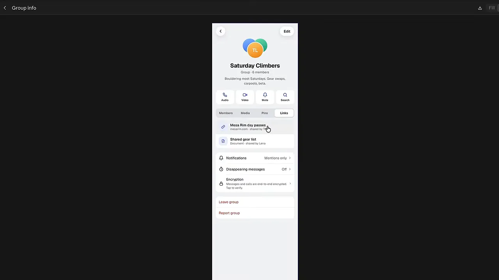
발표자는 특히 설정 화면에 있던 토글들을 Appearance 페이지로 접어 넣은 걸 좋게 봐요. 설정 첫 화면에 그 토글들이 바로 보일 이유가 없었기 때문이에요. 결론은 리디자인이 업계 표준에 훨씬 가까워졌다는 거예요.
같은 세션에서 랜딩 페이지까지
두 번째 데모는 새 세션을 열지 않고 같은 채팅에서 이어 가요. 어떤 디지털 제품이든 마케팅용 랜딩 페이지가 있으면 좋으니, 방금 만든 Parley의 랜딩 페이지를 만들어요. 같은 세션이라 Claude Code는 앱의 이름, 색, 화면을 이미 다 알고 있어요.
프롬프트는 세 문단이에요. 첫 문단은 앱의 이름·색·글꼴·스타일을 그대로 써서 같은 브랜드로 보이게 하고, 폰 목업에는 실제 앱 화면을 넣으라는 내용이에요. 둘째 문단에서 Mobbin MCP가 등장해요. 디자인 전에 인기 소비자 앱의 랜딩 페이지와 웹 섹션을 찾아보고 그 조사로 디자인을 이끌라고 해요. 셋째 문단은 무엇을 Mobbin 조사에서 가져왔는지 끝나고 알려 달라는 요청이에요.
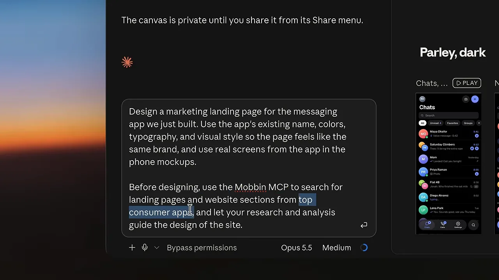
몇 초 뒤 Claude Code가 Mobbin에서 관련 화면을 훑기 시작해요. 발표자는 이 조사를 사람이 하면 웹사이트를 몇 시간씩 돌아다니며 마음에 드는 패턴과 이유를 적어야 한다고 말해요.
섹션마다 참고한 앱
완성된 페이지 왼쪽에는 'How Mobbin shaped the Parley site'라는 표가 있어요. Parley의 섹션, Mobbin에서 찾은 레퍼런스, 거기서 가져온 것을 세 열로 정리했어요. 히어로 줄을 보면 Partiful, Aave, Headspace, Mural을 참고했고, 왼쪽에 큰 문구와 스토어 버튼, 오른쪽 색 패널 위에 폰 한 대를 두는 분할 레이아웃을 가져왔어요.
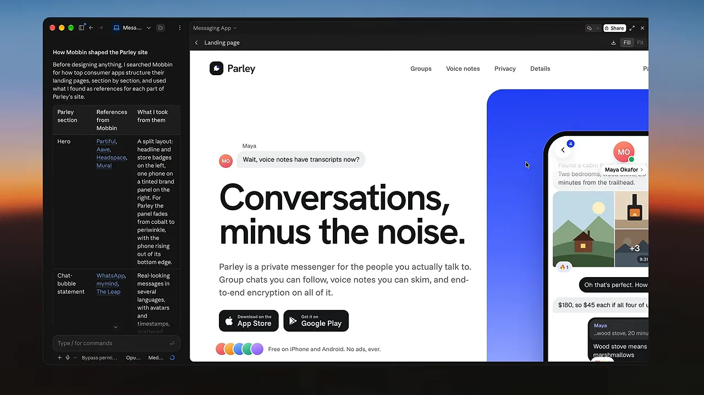
발표자는 레퍼런스 링크를 눌러 Mobbin의 원래 화면을 열어 봐요. 아래는 Partiful의 히어로 섹션이에요. 왼쪽에 'Plan events in seconds' 문구와 버튼, 오른쪽에 폰 화면이 있는 구성이 Parley 히어로와 닮았어요.
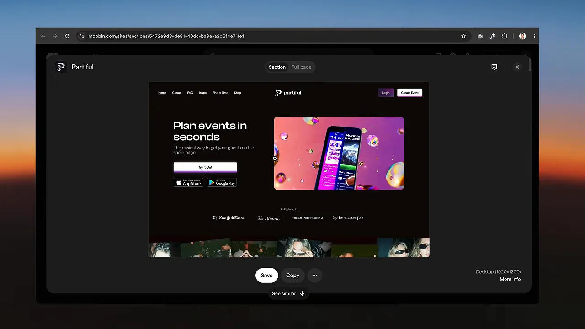
두 번째 섹션은 큰 문장 하나를 가운데 두고 주위에 말풍선을 흩뿌린 구성이에요. 메신저 앱이라는 주제를 그대로 드러내요. 왼쪽 표의 'Chat-bubble statement' 줄을 보면 WhatsApp, mymind, The Leap을 참고했다고 적혀 있어요.
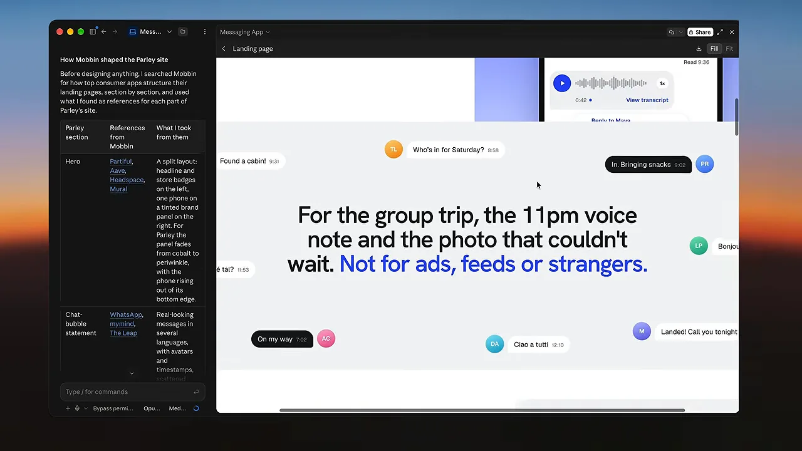
발표자는 여기서 이 과정의 성격을 분명히 해요.
This process is less about copying existing landing pages and more about giving your AI agent design ideas.
이건 기존 랜딩 페이지를 베끼는 게 아니라, AI 에이전트에게 디자인 아이디어를 주는 과정이에요.
— 영상 13:10
브라우저에서 본 전체 페이지
브라우저에서 새로 고치면 문구는 왼쪽에서, 폰 목업은 아래에서 올라오는 애니메이션이 있어요. 스크롤을 내리면 'Group chats you can follow.' 섹션이 나와요. 왼쪽에는 고정 메시지, 나를 부르는 멘션, 멤버·미디어·링크 세 가지 기능이 아이콘과 함께 있고, 오른쪽 폰에는 Saturday Climbers 그룹 채팅이 들어 있어요.
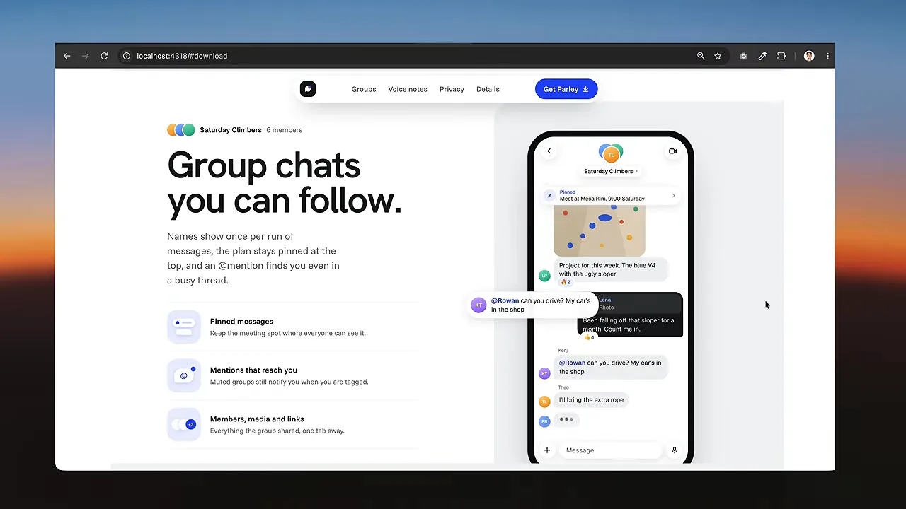
더 내려가면 카드가 가로로 넘어가는 섹션이 있어요. 'Profiles, one tap away.', 'Light and dark, both designed.' 같은 카드마다 앞에서 만든 프로필 화면과 Appearance 화면이 들어가 있어요.
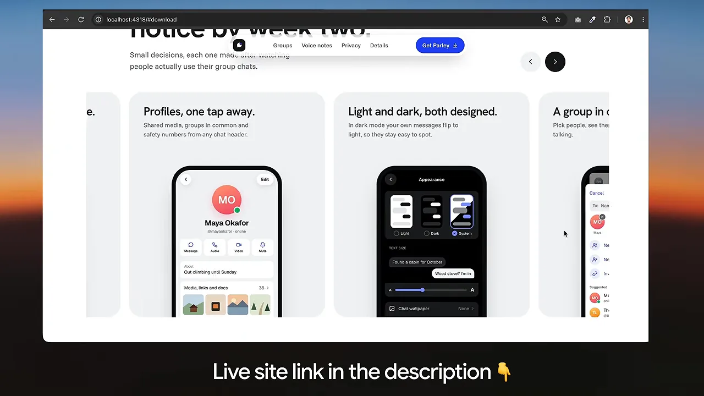
발표자는 Claude가 혼자 만들었을 때보다 확실히 창의적인 패턴이 보인다고 평가해요. 목적은 무언가를 베끼는 게 아니라, 레퍼런스 없이는 부족한 창의성을 AI 에이전트에게 채워 주는 것이라고 다시 강조해요.
플로우로 인터랙션까지 참고해요
마지막으로 발표자는 Mobbin 사이트에서 플로우를 직접 둘러봐요. 플로우, 곧 유저 플로우는 사용자가 디지털 제품을 쓰며 거치는 일련의 동작이에요. 화면 한 장이 아니라 여러 화면이 이어지는 흐름이라, 인터랙션을 다듬을 때 필요해요.
Flows 메뉴에는 주제별 카테고리가 있어요. 아래 화면의 Social 묶음에서 메신저 앱과 가장 관련 있는 건 'Chatting & Sending Messages'예요. 옆 숫자는 그 카테고리에 모인 플로우 수로, 1,269개예요.
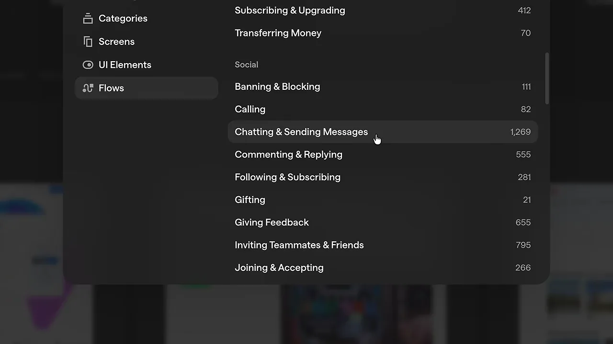
카테고리를 열면 Shopify, Gemini, Microsoft Copilot 같은 회사의 메시지 보내기 플로우가 나와요. 하나를 누르면 Screens와 Video 중 Video 탭에서 그 흐름이 영상으로 재생돼요. 아래는 Shopify의 AI 도우미에게 메시지를 보내는 흐름이에요.
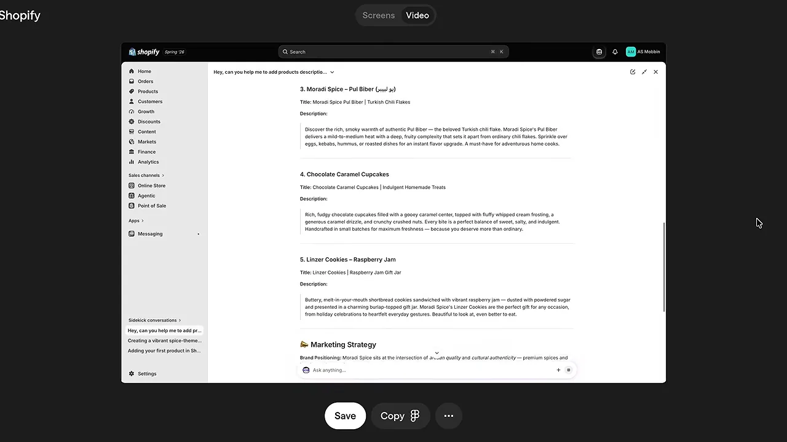
문제는 이 카테고리에 AI와 대화하는 플로우가 많아서, 사람끼리 주고받는 메신저와는 잘 맞지 않는다는 점이에요. 그래서 발표자는 검색창에 "instant messaging flows"를 넣고 AI 검색을 써요. 겉보기엔 평범한 검색 버튼이지만, 옆의 점 세 개를 누르면 Search mode에서 Deep과 Standard를 고를 수 있어요.
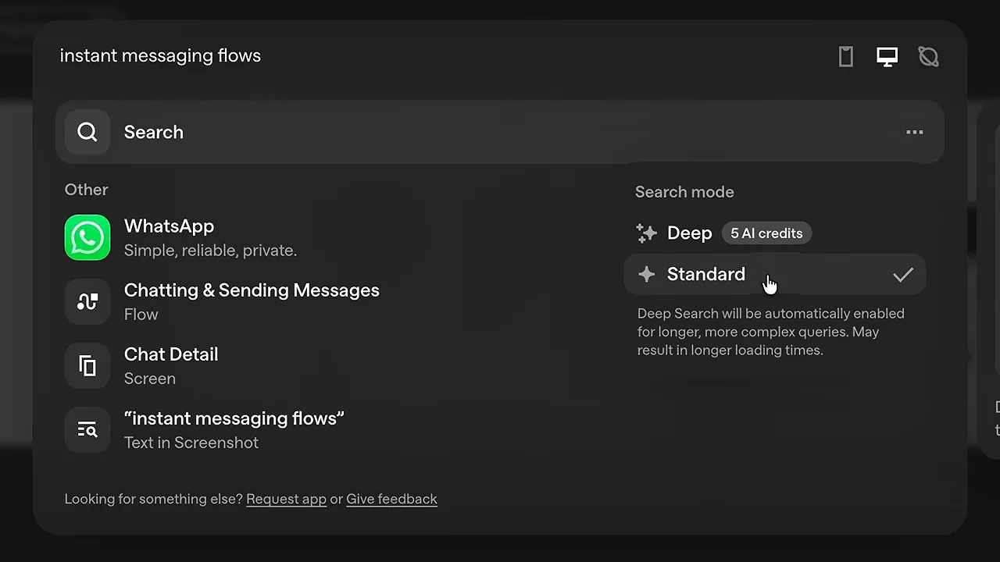
검색하면 자동으로 Flows 탭으로 넘어가고, 이번에는 WhatsApp, Airbnb, Slack처럼 사람끼리 메시지를 주고받는 제품의 플로우가 나와요. 아래는 WhatsApp에서 메시지를 검색하는 흐름이에요. 발표자는 인터랙션과 흐름을 다듬어야 할 때 이 방법을 가장 먼저 쓴다고 해요.
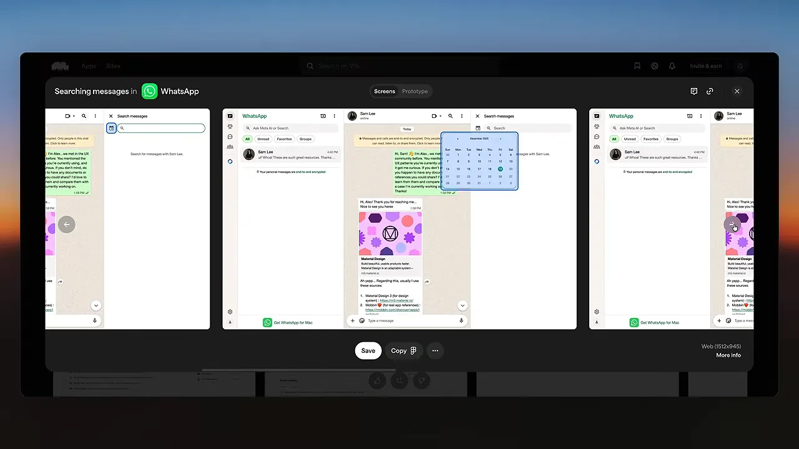
정리: 레퍼런스를 공부한 모델
발표자는 Mobbin에서 가장 돋보이는 기능으로 MCP 서버를 꼽아요. 앱과 웹사이트의 스크린샷을 직접 뒤지는 조사를 에이전트에게 맡길 수 있어서예요. 그리고 Mobbin에는 모바일 화면만 있는 게 아니에요. Sites 쪽 메뉴를 열면 404, About, Hero, Footer, Pricing 같은 웹 섹션과 Dark, Minimal 같은 스타일로 웹 디자인을 찾을 수 있어요. 그래서 랜딩 페이지 데모도 가능했어요.
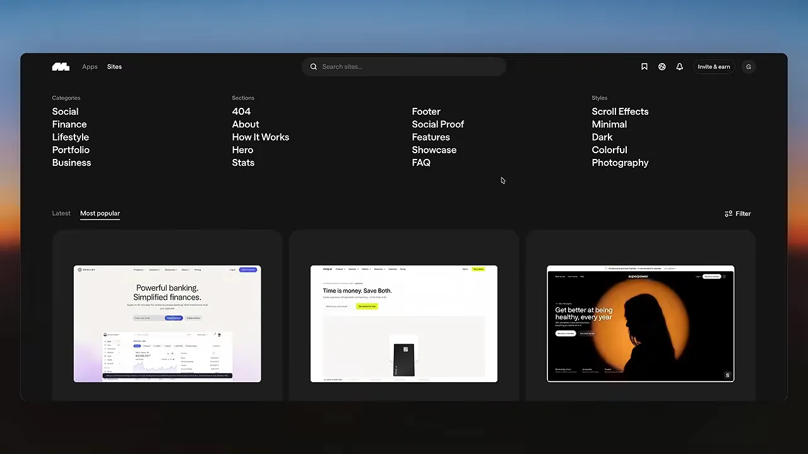
현업 프로덕트 디자이너인 발표자가 개인적으로 가장 아끼는 건 플로우예요. 로그인이나 가입 흐름을 설계할 때 좋은 예가 어떤지 짐작할 필요 없이, 실제 제품 수천 개의 화면과 인터랙션을 하나하나 볼 수 있어서예요. 아래는 쇼핑 앱 Shop의 로그인 플로우로, 시작 화면부터 이메일 인증까지 순서대로 놓여 있어요.
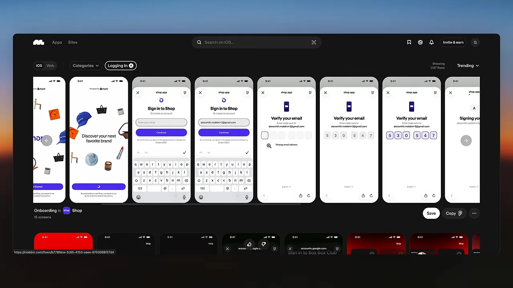
발표자의 마지막 결론은 이 한 문장이에요.
Opus 5.5 with real references makes design decisions I'd expect from someone who studied a lot of great apps because in a way it has.
실제 레퍼런스를 가진 Opus 5.5는 좋은 앱을 많이 공부한 사람에게 기대할 만한 디자인 결정을 내려요. 어떤 의미에선 정말 그렇게 공부했으니까요.
— 영상 17:00